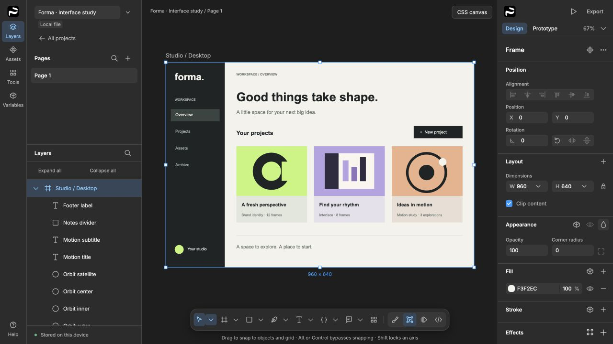
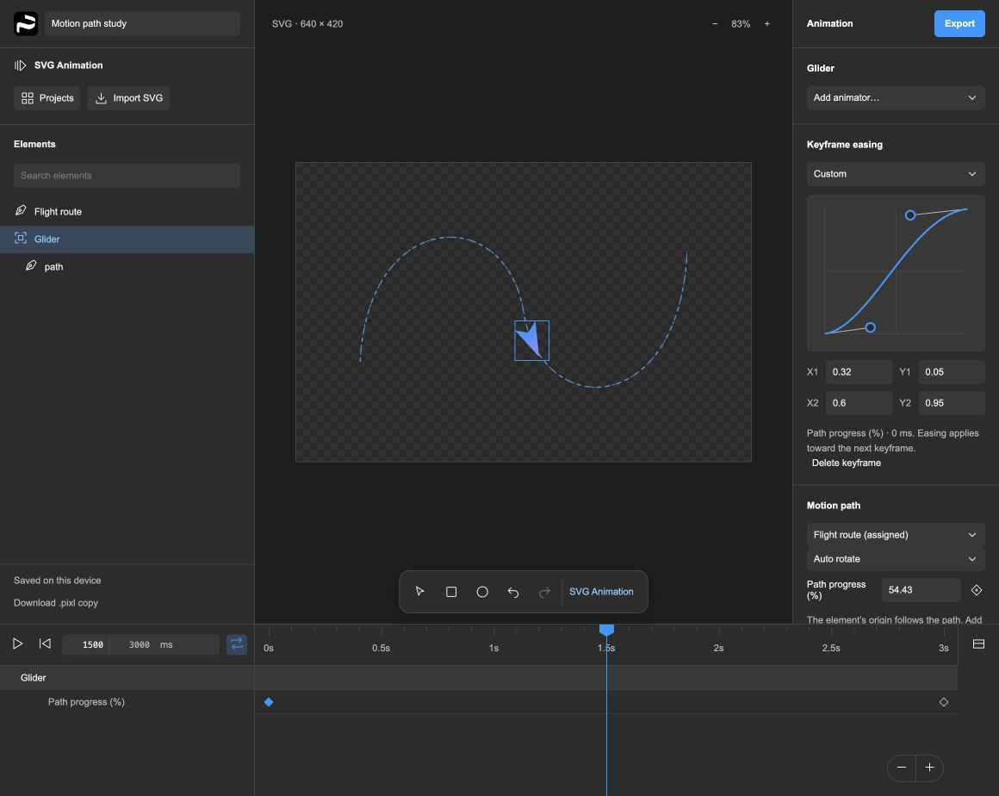
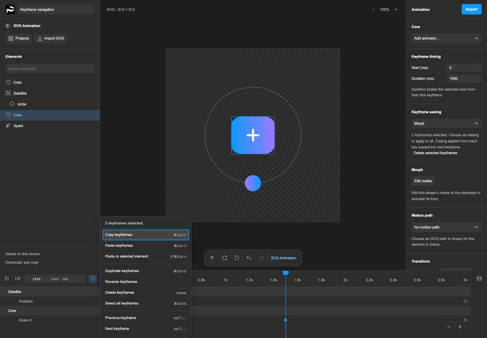
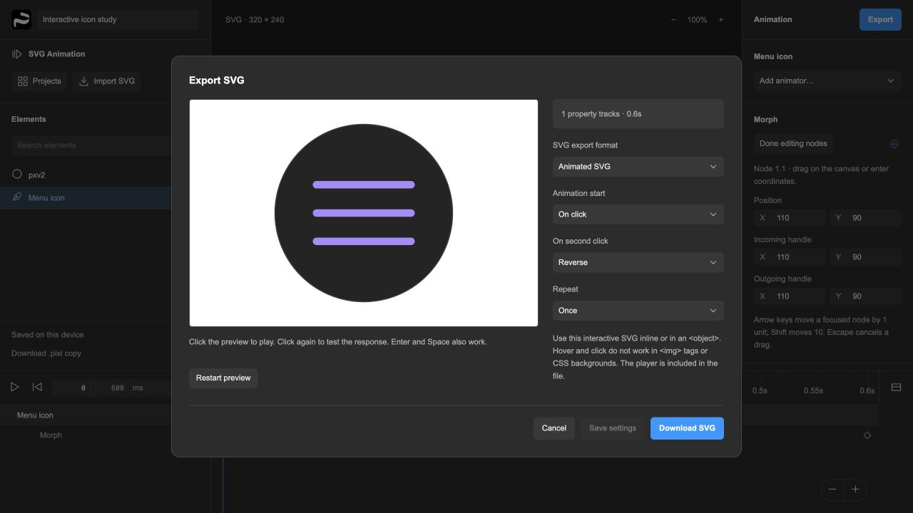

A familiar place to design
Draw shapes and vectors, work with text and images, organize layers into frames, and turn repeated ideas into reusable components. Properties stay close to the canvas.
Explore the editorA free workspace for interface design, prototypes, and SVG animation. Create layouts, bring vector artwork to life, and keep your editable files.
Early access · Windows preview available
Meet the SVG animator

The product
Pixel Perfect is a browser-first design editor with a desktop app and optional self-hosted workspaces. Start with a local project, explore a layout, and take your work with you.
Draw shapes and vectors, work with text and images, organize layers into frames, and turn repeated ideas into reusable components. Properties stay close to the canvas.
Explore the editorUse Flexbox and CSS Grid layout, styles, and variables to develop consistent interfaces. Connect screens with prototype interactions and export artwork or HTML/CSS.
See capabilities & limitsLocal drafts let you begin without a hosted account. Download editable .pixl files for backups and sharing. For team work, run a workspace on infrastructure you manage.
A separate design type In the Windows preview
Give icons, illustrations, and interface details their own timeline. SVG Animation is a dedicated workspace: import vector artwork, shape its movement with keyframes, and export an SVG for the web.

From artwork to animation
Choose New design → SVG Animation from Projects. Import or drop in an SVG, try the built-in example, or start with a rectangle or ellipse.
Select an element, add a property track, and change values at the playhead. Select keys across tracks, set their exact start and duration, and apply a shared easing curve. Duplicate keys at the playhead, Shift-drag to align them, reuse keys on another element, or reverse them to create a return animation. Jump to the previous or next keyframe without losing your selection. Pause to inspect the artwork, then resume from that moment.
Preview the generated SVG, choose when it plays, and download it. Save a .pixl copy to keep your editable timeline.
Control the timingAnimate position, rotation, scale, opacity, fill, stroke, and dash offset on independent property tracks. Shape the pace with keyframes and custom Bézier easing.
Shape the movementFollow a motion path with optional auto-rotation, or morph a shape by editing its anchors and handles at different times.
Make it respondExport on-load, hover, or click animations. Choose once or loop, and set what happens when the pointer leaves or someone clicks again.

See the export. Try the result.

TRY AN EXPORTED SVG
Click the icon. Click again to reverse.
Keyboard: focus the icon, then Enter or Space.
An actual export from Pixel Perfect.
Download this SVG
SVG Animation is included in the Windows v0.1.1-alpha.19 preview. Choose New design → SVG Animation to start. Select, move, and copy groups of keyframes across tracks. Apply easing to the whole selection, or stretch and compress its timing with precise Start and Duration controls. Copy transform and appearance keys onto another element with Paste to selected element. Choose Reverse keyframes to turn a selected sequence and its easing into a return animation. Duplicate selected keys at the playhead with Cmd/Ctrl+D. Shift-drag snaps to the playhead or other keys while keeping the group’s spacing; Alt bypasses snapping. Each edit is one undo step. Alt/Option+Left/Right jumps between keyframes while keeping your selection; the timeline menu offers the same actions. Alpha.19 also fixes Pause clicks during playback. Interactive SVGs work inline or in an <object>; scripts do not run in image tags. Video, Lottie, and SVGator project import are not supported. Workflow, supported features & limitations
pxlprfct icons Free · MIT licensed
679 interface icons for websites, apps, and the things you’re building. One consistent collection in Light, Regular, and Bold, with SVG downloads and fonts for the web and design tools.
Find an icon in the gallery to download its SVG. The complete pack includes WOFF2, TTF, CSS, and the source catalog.
The icon library has its own MIT license, separate from the editor’s Community License. Free for personal and commercial use, modification, and redistribution with the license notice. Explore the icon source
Why Pixel Perfect?
The idea is simple: useful creative software should be free to use, open to understand, and possible to make your own.
Pixel Perfect brings visual design, prototyping, and motion into one evolving project. The editor runs in the browser, backed by a Rust document engine compiled to WebAssembly. The desktop app makes the same workspace available as an installable application.
It’s for people who want to explore an idea locally, learn how a design tool works, adapt it to a particular workflow, or host a workspace for their team. Developers can also connect AI tools through the project’s optional MCP server.
If you’re looking for a free Figma alternative with source available, this is a project to explore. Figma has shaped many familiar design workflows, and Pixel Perfect follows those conventions where they help. It is an independent project with its own implementation and roadmap.
This is early software, not a promise of complete Figma compatibility. Local .fig import includes a conversion report; some advanced features need rebuilding. Keep your originals and back up important work.
Free to create
Build it. Ship it. Sell your work.
Keep the editor free.
Use Pixel Perfect for personal projects, your business, or paid client work. Sell the websites, apps, artwork, and animations you create. Normal SVG and HTML/CSS exports can be part of commercial products, and your own work can stay private.
The Pixel Perfect Community License lets you study, modify, and share the editor. You cannot sell Pixel Perfect, software derived from its implementation, paid features, or paid hosted access. Shared or hosted versions must provide their corresponding source for free under the same terms.
This is source-available software, not an OSI-approved open-source license. Forks are welcome within these terms; changes to the official repository still require the owner’s approval.
Previously published MIT / Apache 2.0 versions retain their original permissions. This change is not retroactive. Licensing details & version history
Start making
Free to download. Free to use.
Choose the Windows preview or build the latest source yourself.
Windows x64 · v0.1.1-alpha.19
SVG animator · Navigate & pause
This early Windows build is unsigned. Windows may show an unrecognized-publisher warning. Review the release notes and signing policy before installing.
LATEST DEVELOPMENT
Explore the newest editor, SVG Animation, and team-workspace changes. Build the browser app or package the desktop application with Node.js and Rust.
OTHER PLATFORMS
Public installers are not available yet. Run the browser editor from source; macOS desktop build instructions are in the repository. A public Mac release awaits signing and notarization.
Desktop build guideDownloads are hosted on GitHub Releases. This preview includes SVG import, grouped keyframe editing and easing, precise selection timing, animation reuse and reversal, keyframe duplication and snapping, motion paths, morphing, and interactive SVG export. It uses the Community License: creating and selling your own work is allowed; selling or monetizing the editor or derived software is not. Earlier v0.1.0-alpha.1 downloads retain their MIT / Apache 2.0 terms. All releases
A few useful details
Yes. There is no subscription or paid tier. The source and public downloads are free. If you choose to self-host a team workspace, your own infrastructure costs are yours to manage.
Install the Windows preview or build the latest source, then choose New design → SVG Animation from Projects. Save .pixl files for editable timelines; an exported SVG is the playback file. Explore the animator.
No hosted account is needed to create local projects. Team workspaces use accounts on the server you connect to. Local drafts live in browser or app storage, so download .pixl backups for important work.
You can import local Figma Design .fig files. The importer creates a separate editable project and reports conversion limits. It does not support every Figma feature; keep the original file and review the result. Read the import guide.
Pixel Perfect is in active development. The available desktop package is an early, unsigned preview. Try it, report issues, and keep backups; review the capability matrix and release notes before relying on a particular workflow.
Yes. Commercial client work, websites, apps, artwork, and animations made with the editor are allowed. That includes code and animation players included by normal exports as part of your work. Your output does not need to be free or source-available.
Under the Community License, you cannot sell the editor, software derived from its implementation, paid features, or hosted access. You can modify it privately and share free versions with their corresponding source under the same license. Earlier MIT / Apache 2.0 versions retain their original permissions. Read the licensing details.
Use GitHub Issues for bugs and feature requests. For security vulnerabilities, follow the private reporting policy.